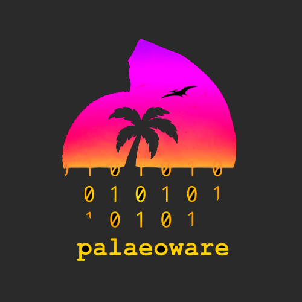

Welcome to SPIERSview’s User Manual¶
[S]erial [P]alaeontological [I]mage [E]diting and [R]endering [S]ystem: Three-dimensional interactive viewer
Main Coding: Mark Sutton
Additional Coding: Russell Garwood, Alan R.T. Spencer
Documentation: Mark Sutton, Russell Garwood, Alan R.T. Spencer
SPIERSview is a stand-alone program for viewing and manipulating of three-dimensional models. It understands five different file formats, the first four of which it can also output.

t:@palaeoware
w:https://github.com/palaeoware.
Relevant references¶
Sutton, M.D., Garwood, R.J., Siveter, D.J. & Siveter, D.J. 2012. Spiers and VAXML; A software toolkit for tomographic visualisation, and a format for virtual specimen interchange. Palaeontologia Electronica 15(2): 15.2.5T
Table of Contents¶
- 1. Introduction and File Formats
- 2. System Requirements and Triangle Count
- 3. Starting SPIERSview
- 4. Basic viewing and manipulation
- 5. Anti-aliasing
- 6. Object Panel
- 7. Advanced Object properties
- 8. Manipulating objects independently
- 9. Multi-piece datasets
- 10. Clipping panel
- 11. Info panel
- 12. Saving and exporting
- 13. Animation System
- 14. Scale
- 15. Update system
- 16. Appendix A – VTK Usage